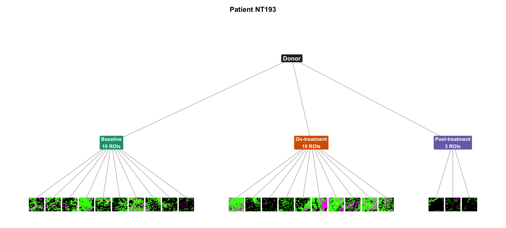

One patient, three timepoints, several ROIs
mk_spatial_tile <- function(dat, square = TRUE, pt = c(other = 0.10, pdl1 = 0.16, m2 = 0.16)) {
if (nrow(dat) == 0) {
dat <- tibble::tibble(
Location_Center_X = numeric(),
Location_Center_Y = numeric(),
draw = character()
)
}
tile <- ggplot(dat, aes(x = Location_Center_X, y = Location_Center_Y)) +
geom_point(data = filter(dat, draw == "other"), colour = "#39FF14", size = pt[["other"]]) +
geom_point(data = filter(dat, draw == "pdl1"), colour = "#FFFF00", size = pt[["pdl1"]]) +
geom_point(data = filter(dat, draw == "m2"), colour = "#FF00FF", size = pt[["m2"]]) +
scale_x_continuous(labels = NULL, guide = "none", expand = c(0, 0)) +
scale_y_reverse(labels = NULL, guide = "none", expand = c(0, 0)) +
theme_void(base_size = 8) +
theme(
plot.background = element_rect(fill = "white", colour = NA),
panel.background = element_rect(fill = "black", colour = NA),
legend.position = "none",
plot.margin = margin(
if (square) 1 else 0, if (square) 1 else 0,
if (square) 1 else 0, if (square) 1 else 0,
unit = "pt"
)
)
if (square) tile <- tile + theme(aspect.ratio = 1)
tile
}
roi <- read_csv(
file.path(results_dir, "sccomp_long_tme_immune_roi.csv"),
col_select = c(PatientID, BiopsyPhase, ImageID),
show_col_types = FALSE
) |>
filter(PatientID == "NT193") |>
distinct() |>
mutate(BiopsyPhase = factor(BiopsyPhase, phase_levels)) |>
arrange(BiopsyPhase, ImageID) |>
mutate(i = row_number(), .by = BiopsyPhase)
n_phase <- roi |>
summarise(n = n(), .by = BiopsyPhase) |>
mutate(x0 = cumsum(n + 2) - (n + 2))
roi <- roi |>
left_join(n_phase, by = "BiopsyPhase") |>
mutate(x = i + x0)
cells_nt <- read_fst(file.path(post_dir, "nt193-cells.fst")) |>
as_tibble()
dx <- 0.46
pad <- 0.62
xmin <- min(roi$x) - pad
xmax <- max(roi$x) + pad
fig_w <- 12
fig_h <- 5.4
target_in <- (2 * dx) / (xmax - xmin) * fig_w
headroom <- 1.9
tile_h <- target_in * headroom / (fig_h - target_in)
phase <- roi |>
summarise(x = mean(x), .by = BiopsyPhase) |>
mutate(
y = tile_h + 0.62,
label = case_match(
as.character(BiopsyPhase),
"Baseline" ~ "Baseline\n10 ROIs",
"On-treatment" ~ "On-treatment\n10 ROIs",
"Post-treatment" ~ "Post-treatment\n3 ROIs"
)
)
patient <- tibble::tibble(
x = mean(phase$x), y = phase$y[1] + 0.95, label = "Donor"
)
edges <- bind_rows(
phase |> mutate(x, y, xend = patient$x, yend = patient$y),
roi |> mutate(
x,
y = tile_h,
xend = phase$x[match(BiopsyPhase, phase$BiopsyPhase)],
yend = phase$y[1]
)
)
phase_cols <- c(
Baseline = "#1B9E77",
`On-treatment` = "#D95F02",
`Post-treatment` = "#7570B3"
)
tree <- ggplot() +
geom_segment(
data = edges, aes(x = x, y = y, xend = xend, yend = yend),
colour = "grey70", linewidth = 0.4
) +
geom_label(
data = phase,
aes(x, y, label = label, fill = BiopsyPhase),
colour = "white", fontface = "bold", size = 3, label.size = 0
) +
geom_label(
data = patient, aes(x, y, label = label),
fill = "grey15", colour = "white", fontface = "bold", size = 3.6, label.size = 0
) +
scale_fill_manual(values = phase_cols, guide = "none") +
coord_cartesian(
xlim = c(xmin, xmax),
ylim = c(-0.04, patient$y + 0.4),
clip = "off"
) +
labs(title = "Patient NT193") +
theme_void(base_size = 11) +
theme(
plot.title = element_text(face = "bold", hjust = 0.5, size = 12),
plot.margin = margin(6, 6, 6, 6)
)
for (i in seq_len(nrow(roi))) {
tree <- tree + annotation_custom(
ggplotGrob(mk_spatial_tile(filter(cells_nt, ImageID == roi$ImageID[i]), square = FALSE)),
xmin = roi$x[i] - dx,
xmax = roi$x[i] + dx,
ymin = 0,
ymax = tile_h
)
}
tree